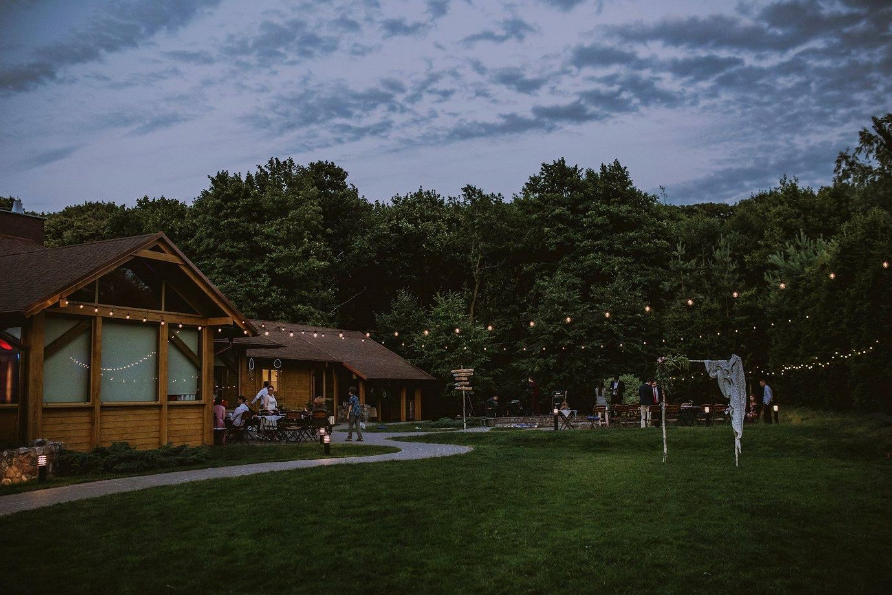
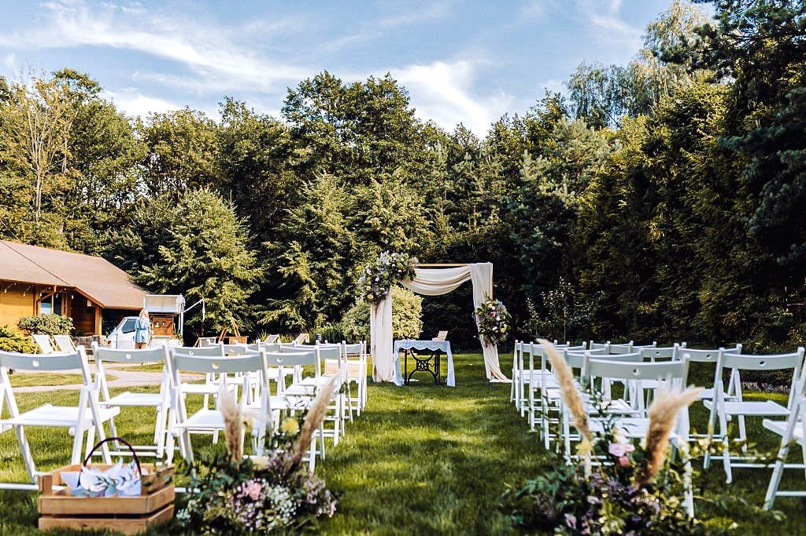
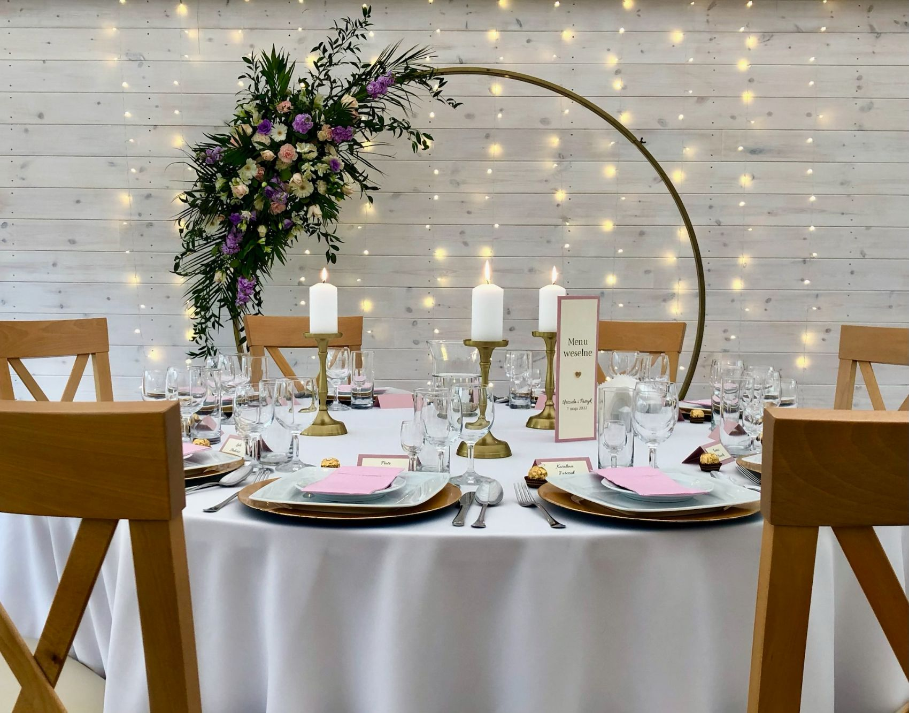
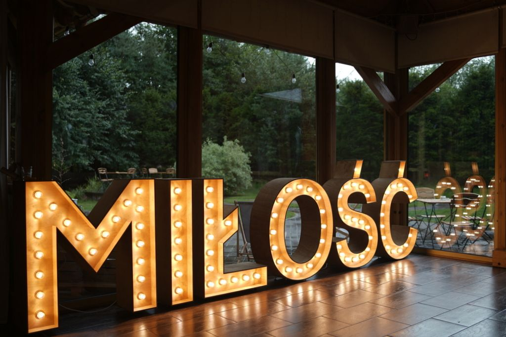

„Najpiękniejsze chwile dzieją się tam, gdzie natura spotyka się z miłością.”

Przygotowania w ciszy ogrodu
Dzień zaczyna się powoli. Światło przesącza się przez liście, w powietrzu unosi się zapach kaliny i świeżej trawy. Ostatnie poprawki, spojrzenia, oddech — zanim wszystko się zacznie.

Przysięga między drzewami
Goście zajmują miejsca na trawniku nad Strzyżą. Słońce przebija się między koronami drzew, a Wasze „tak” wybrzmiewa w najpiękniejszej możliwej scenografii — tej, której nie da się zaaranżować w sali.

Obiad, toasty, taras o zachodzie
Z ogrodu przechodzicie do eleganckiej sali i na tarasy. Domowe dania, pierwszy taniec, toasty bliskich. Gdy zapada zmierzch, taras nad rzeką zamienia się w najlepsze miejsce wieczoru.

Muzyka, światła i bliscy ludzie
Wieczór należy do Was i Waszych gości. Światła w gałęziach, muzyka niesie się nad wodą, a Kalinówka — prywatna, tylko Wasza — trzyma ten moment dla Was tak długo, jak chcecie.